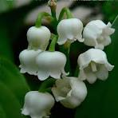
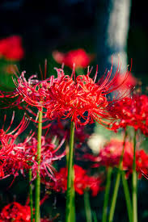
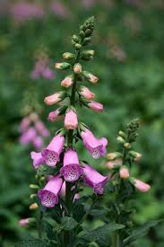
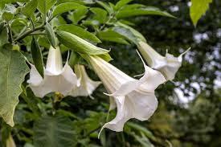
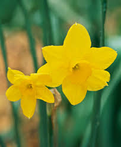

Type of Flowers
- Lily Of The Valley
 - Red Spider Lily
 - Foxglove
 - Angel's Trumpet
 - Daffodil

What part is poisonous
- Lily Of The Valley
- All parts of the plant are poisonous, with the greatest concentration of cardenolides being in the roots.
- Red Spider Lily
- All parts of the red spider lily (Lycoris radiata) are poisonous, but the bulbs are the most toxic.
- Foxglove
- All parts of the foxglove plant are poisonous, but the greatest concentration of the toxic chemical is in the leaves and flowers.
- Angel's Trumpet
- All parts of the angel's trumpet is poisonous — including the flower, leaves, seeds and stem.
- Daffodil
- All parts of the daffodil plant are poisonous, but the bulb contains the highest concentration of the toxic chemical.
link to a source of deadly flowers
if you want to know more about deadly flowers click on the link belowDeadly flowers